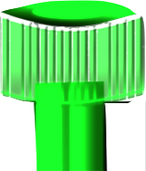
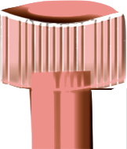
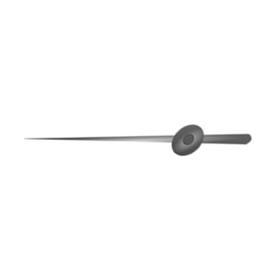

<div id="stopwatch" (click)="onAutoTurnTimer()" class="stopwatch-boundary">

  
  <div #stopwatchAssets>
    
    
     <!-- cdkDragBoundary=".stopwatch-boundary" cdkDrag (cdkDragEnded)="onDragEnd($event)"-->

    <!--DragDrop Specifics:-->
    <div cdkDropListGroup id="list-group">

      <div cdkDropList class="drag-list" *ngFor="let array of timerDragCircles; let i = index" 
        (cdkDropListDropped)="dropped($event)" [cdkDropListData]="timerDragCircles[i]" 
        [ngStyle]="applyDragCircleRotate(i)" [id]='i'>
    
        <mat-icon *ngFor="let item of timerDragCircles[i]" cdkDrag 
          cdkDragBoundary=".stopwatch-boundary" class="drag-item" inline="true">
    
          <div *cdkDragPlaceholder class="drag-placeholder"></div>          
          hourglass_full
        </mat-icon>
      </div>
      
    </div>  
  </div>
</div>


<!--
  <div *ngFor="let item of timerDragCircles[i]" cdkDrag 
          cdkDragBoundary=".stopwatch-boundary">
    
          <div *cdkDragPlaceholder class="drag-placeholder"></div>          
          <mat-icon class="drag-item" inline="true">hourglass_full</mat-icon>
        </div>
-->